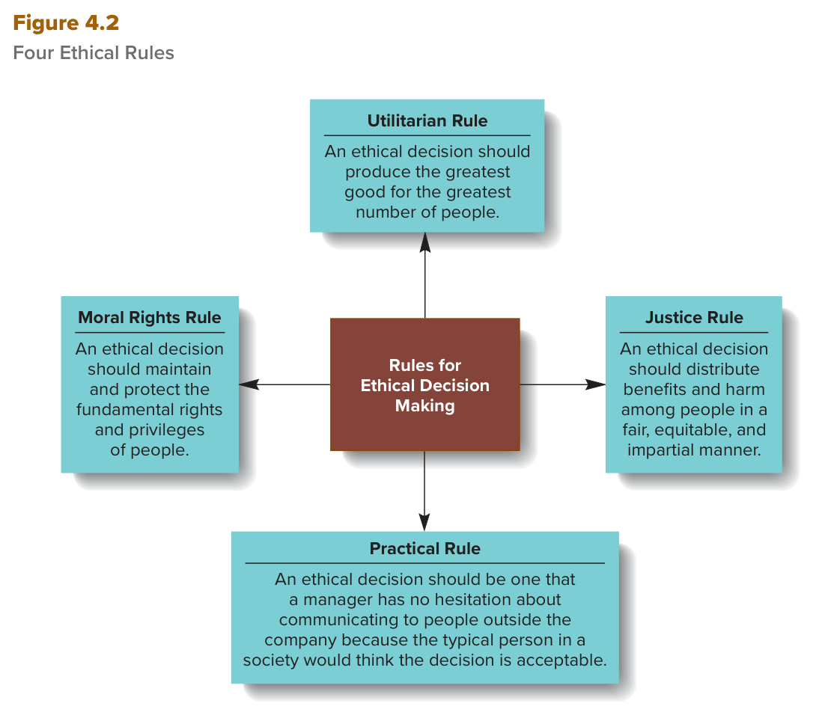
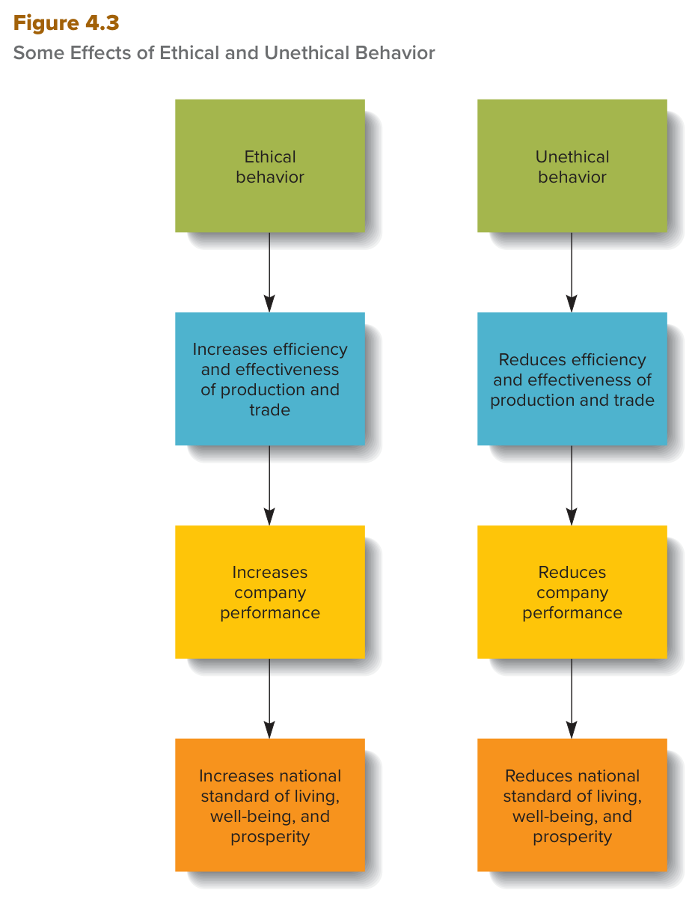

MGT 102 · Chapter 4 · القسم ٢ من ٤:
Ethical Decision Rules and Why Behave Ethically
الهدف LO4-3: Describe four rules that can help companies and their managers act in ethical ways.
الهدف LO4-4: Discuss why it is important for managers to behave ethically.
في الدرس اللي قبل عرفت إن الشركة عندها ست مجموعات أصحاب مصلحة (stakeholders)، وكل مجموعة
تطلب شي. المشكلة إن القرار اللي يرضي مجموعة غالباً يضر الثانية. طيب كيف المدير يعرف إن قراره أخلاقي؟
الكتاب يعطيه أربع قواعد (LO4-3)، وبعدها يجاوب سؤال أكبر: ليش المدير لازم يكون أخلاقي من الأساس؟
(LO4-4) — والجواب يدور حول ثلاث كلمات: tragedy of the commons وtrust وreputation.
ركّز من الحين: أكثر شي يطيّح الطلاب هنا هو الخلط بين القواعد الأربع — utilitarian = أكبر خير لأكبر عدد، moral rights = حماية الحقوق، justice = توزيع بإنصاف، practical = تقدر تعلن القرار للناس بدون تردد. الاختبار يعطيك موقف ويسألك أي قاعدة ينطبق عليها، فخذ التعاريف الإنجليزية حرفية من صناديق EXAM BOX واحفظ الكلمة المفتاحية في كل وحدة.
لما تشوف الشركة بعين أصحاب المصلحة (stakeholder perspective)، الأسئلة الأخلاقية تكثر: وش الطريقة المناسبة تدير فيها مطالبات الكل؟ لأن القرار اللي يحابي مجموعة غالباً يضر مصالح المجموعات الثانية.
مثال الكتاب: الشركة ترفع أسعارها على العملاء (high prices).
| لما الشركة تتصرف بأخلاقية | نتايج السلوك غير الأخلاقي (أربع) |
|---|---|
| أصحاب المصلحة يدعمونها (stakeholders support them)، مثلاً: | ١. خسارة السمعة والموارد (loss of reputation and resources) |
| ١. البنوك مستعدة تعطيها رأس مال جديد | ٢. المساهمين يبيعون أسهمهم |
| ٢. تجذب متقدّمين للوظايف مؤهلين جداً | ٣. المدراء والموظفين المهرة يطلعون من الشركة |
| ٣. عملاء جدد ينجذبون لمنتجاتها | ٤. العملاء يروحون لمنتجات شركات سمعتها أحسن (more reputable companies) |
| النتيجة: الشركات الأخلاقية تكبر وتتوسع مع الوقت، وكل أصحاب المصلحة يستفيدون. | |
عشان كذا المدير وهو ياخذ قراراته لازم يحسب حساب مطالبات كل أصحاب المصلحة. ويقدر يستخدم أربع قواعد أو مبادئ أخلاقية (four ethical rules or principles) يحلل فيها أثر قراراته عليهم. الكتاب يسميها useful guidelines — إرشادات تساعد المدير يقرر وش التصرف المناسب في المواقف اللي لازم يوازن فيها بين مصلحة الشركة الذاتية ومصالح أصحاب المصلحة.
وجملة الكتاب اللي تربط كل شي: الاختيارات الصح تخلّي الموارد تنصرف في المكان اللي تخلق فيه أعلى قيمة، ولو كل الشركات اختارت صح، كل أصحاب المصلحة يستفيدون على المدى الطويل.

هذا هو Figure 4.2 في الكتاب. في النص مربّع عنّابي مكتوب فيه Rules for Ethical Decision Making، وطالع منه أربع أسهم لأربع مربعات: فوق Utilitarian Rule، يسار Moral Rights Rule، يمين Justice Rule، تحت Practical Rule. كل مربع فيه جملة القاعدة وتبدأ بـAn ethical decision should…. كيف تقرأه: الأسهم طالعة من النص للأطراف — يعني القرار الواحد ينفحص بالأربع، مو هرم ولا خطوات بالترتيب. انتبه للصياغة: الشكل يقول no hesitation والهامش يقول no reluctance؛ الشكل يقول fundamental rights and privileges of people بدون كلمة inalienable؛ والشكل يقول fair, equitable, and impartial manner والهامش fair, equitable, or impartial way — نفس المعنى. وش يجي منه بالاختبار: يعطيك جملة من المربعات ويطلب اسم القاعدة، أو يسألك أي وحدة مو من الأربع.
| القاعدة | بالعربي | السؤال اللي تسأله لنفسك | الكلمة المفتاحية |
|---|---|---|---|
| Utilitarian rule | قاعدة المنفعة | أي خيار يعطي أكبر خير لأكبر عدد؟ | greatest good · greatest number |
| Moral rights rule | قاعدة الحقوق الأخلاقية | أي خيار يحمي حقوق الناس الأساسية أكثر؟ | rights and privileges |
| Justice rule | قاعدة العدالة | أي خيار يوزّع المنافع والأضرار بإنصاف؟ | fair, equitable, impartial |
| Practical rule | القاعدة العملية | أقدر أعلن القرار لناس برّا الشركة بدون تردد؟ | typical person in a society |
When companies act ethically, their stakeholders support them. For example, banks are willing to supply them with new capital, they attract highly qualified job applicants, and new customers are drawn to their products. Thus, ethical companies grow and expand over time, and all their stakeholders benefit. The results of unethical behavior are loss of reputation and resources, shareholders selling their shares, skilled managers and employees leaving the company, and customers turning to the products of more reputable companies.
When making business decisions, managers must consider the claims of all stakeholders. To help themselves and employees make ethical decisions and behave in ways that benefit their stakeholders, managers can use four ethical rules or principles to analyze the effects of their business decisions on stakeholders: the utilitarian, moral rights, justice, and practical rules (Figure 4.2). These rules are useful guidelines that help managers decide on the appropriate way to behave in situations where it is necessary to balance a company's self-interest and the interests of its stakeholders.
| المصطلح | التعريف بالإنجليزي (احفظه حرفي) | بالعربي |
|---|---|---|
| Utilitarian rule قاعدة المنفعة |
An ethical decision is a decision that produces the greatest good for the greatest number of people. | القرار الأخلاقي هو اللي يحقق أكبر خير لأكبر عدد من الناس. |
| Moral rights rule قاعدة الحقوق الأخلاقية |
An ethical decision is one that best maintains and protects the fundamental or inalienable rights and privileges of the people affected by it. | القرار الأخلاقي هو اللي يحافظ ويحمي بأحسن شكل الحقوق الأساسية أو غير القابلة للتنازل (inalienable) وامتيازات الناس المتأثرين فيه. |
التطبيق خطوتين:
الورطة الأخلاقية للمدير (the ethical dilemma for managers) هنا ثلاث أسئلة:
مثال الكتاب — global outsourcing: المدير يختار بين إنه ينقل الإنتاج برّا (global outsourcing) عشان يقلل التكاليف وينزّل الأسعار، أو يكمّل بإنتاج عالي التكلفة داخل أمريكا.
| الخيار | مين يستفيد | مين يتضرر |
|---|---|---|
| Global outsourcing | المساهمين والعملاء | الموظفين ومجتمعاتهم (تسريح كبير) |
| الإنتاج المحلي | (مو مذكور في الكتاب — بس يُفهم منه إن الموظفين يحتفظون بوظايفهم) | ممكن الشركة تنهار وتفلس ← ضرر أكبر على الكل |
الكتاب يقول: في مجتمع رأسمالي زي أمريكا، مصالح المساهمين عادةً تنحط فوق مصالح الموظفين، فالإنتاج ينتقل برّا. وهذا عادةً يحسبونه الخيار الأخلاقي — لأن البديل ممكن يفلّس الشركة، وساعتها الضرر يكون أكبر على كل أصحاب المصلحة. يعني منطق «أقل ضرر» بالضبط.
القرارات الأخلاقية تحمي حقوق الناس في (الكتاب يعدّها بالاسم — ست):
| # | الحق | بالعربي |
|---|---|---|
| ١ | Freedom | الحرية |
| ٢ | Life and safety | الحياة والسلامة |
| ٣ | Property | الملكية |
| ٤ | Privacy | الخصوصية |
| ٥ | Free speech | حرية التعبير |
| ٦ | Freedom of conscience | حرية الضمير |
الورطة الأخلاقية: القرار اللي يحمي حقوق ناس غالباً يضر حقوق ناس ثانيين — فمين تحمي؟ أمثلة الكتاب:
The utilitarian rule is that an ethical decision is a decision that produces the greatest good for the greatest number of people. To decide which is the most ethical course of business action, managers should first consider how different possible courses of business action would benefit or harm different stakeholders. They should then choose the course of action that provides the most benefits, or, conversely, the one that does the least harm, to stakeholders.
Under the moral rights rule, an ethical decision is one that best maintains and protects the fundamental or inalienable rights and privileges of the people affected by it. For example, ethical decisions protect people's rights to freedom, life and safety, property, privacy, free speech, and freedom of conscience. The adage “Do unto others as you would have them do unto you” is a moral rights principle that managers should use to decide which rights to uphold.
| المصطلح | التعريف بالإنجليزي (احفظه حرفي) | بالعربي |
|---|---|---|
| Justice rule قاعدة العدالة |
An ethical decision distributes benefits and harms among people and groups in a fair, equitable, or impartial way. | القرار الأخلاقي يوزّع المنافع والأضرار بين الناس والمجموعات بطريقة عادلة أو منصفة أو غير متحيّزة. |
| Practical rule القاعدة العملية |
An ethical decision is one that a manager has no reluctance about communicating to people outside the company because the typical person in a society would think it is acceptable. | القرار الأخلاقي هو اللي المدير ما عنده أي تردد يبلّغه لناس برّا الشركة، لأن الشخص العادي في المجتمع (the typical person in a society) بيعتبره مقبول. |
الكتاب يقول: كل وحدة من القواعد الثلاث الأولى تعطيك طريقة مختلفة ومكمّلة (different and complementary) تحكم فيها على القرار، والثلاث كلها لازم تُستخدم عشان تفرز أخلاقيات أي مسار. بس القضايا الأخلاقية نادراً تكون واضحة (seldom clear-cut)، لأن حقوق أصحاب المصلحة ومصالحهم وأهدافهم وحوافزهم غالباً تتعارض. عشان كذا خبراء أخلاق كثير يضيفون قاعدة رابعة هي practical rule.
الاختبار الثلاثي: القرار التجاري غالباً مقبول أخلاقياً لو المدير قدر يجاوب «نعم» على الثلاثة كلها:
| # | السؤال بالإنجليزي | بالعربي |
|---|---|---|
| ١ | Does my decision fall within the accepted values or standards that typically apply in business activity today? | قراري داخل القيم أو المعايير المقبولة في النشاط التجاري اليوم؟ |
| ٢ | Am I willing to see the decision communicated to all people and groups affected by it—for example, by having it reported on TV or via social media? | أنا مستعد القرار ينبلّغ لكل المتأثرين فيه — مثلاً ينعرض في التلفزيون أو السوشال ميديا؟ |
| ٣ | Would the people with whom I have a significant personal relationship, such as family members, friends, or even managers in other organizations, approve of the decision? | الناس اللي بيني وبينهم علاقة شخصية مهمة — أهلي، أصحابي، أو حتى مدراء في منظمات ثانية — بيوافقون؟ |
فايدتها: تطبيق الـpractical rule يضمن إن المدير ياخذ مصالح كل أصحاب المصلحة بالحسبان. وبعد ما يطبقها، يقدر يحكم هل اختار تصرف أخلاقي ولا غير أخلاقي، ولازم يتحمّل العواقب (they must abide by the consequences).
The justice rule is that an ethical decision distributes benefits and harms among people and groups in a fair, equitable, or impartial way. Managers should compare and contrast alternative courses of action based on the degree to which they will fairly or equitably distribute outcomes to stakeholders.
Each of these rules offers a different and complementary way of determining whether a decision or behavior is ethical, and all three rules should be used to sort out the ethics of a particular course of action. For this reason many experts on ethics add a fourth rule to determine whether a business decision is ethical: The practical rule is that an ethical decision is one that a manager has no hesitation or reluctance about communicating to people outside the company because the typical person in a society would think it is acceptable.
Applying the practical rule to analyze a business decision ensures that managers are taking into account the interests of all stakeholders.
ليش مهم المدراء — والناس عموماً — يتصرفون بأخلاقية ويخففون سعيهم ورا مصلحتهم الذاتية بإنهم يفكرون بأثر أفعالهم على غيرهم؟ جواب الكتاب: السعي بلا هوادة ورا المصلحة الذاتية يوصّل لـكارثة جماعية (collective disaster) لما شخص أو أكثر يبدأ يربح من كونه غير أخلاقي، لأن هذا يشجّع غيره يسوي نفس الشي. وكل ما زاد عدد اللي يتصرفون لمصلحتهم، صار الكل يحاول يتلاعب بالوضع لأغراضه الشخصية بدون أي اعتبار لأثر تصرفه على غيره. هذا اسمه “tragedy of the commons”.
قصة الكتاب (احفظها بالترتيب، تجيك سيناريو):
العبرة: ملاحقة المصلحة الشخصية بدون اعتبار لمصالح المجتمع تقود لكارثة لكل فرد وللمجتمع كله، لأن الموارد الشحيحة تتدمّر (scarce resources are destroyed).
| Unethical society — مجتمع غير أخلاقي | Ethical society — مجتمع أخلاقي | |
|---|---|---|
| وش هو | أصحاب المصلحة روتينياً يحاولون يغشّون ويحتالون على بعض (cheat and defraud) | أصحاب المصلحة يعتقدون إنهم يتعاملون مع ناس أخلاقيين وصادقين بالأساس (moral and honest) |
| الثقة | ما فيه ثقة ← يقضون ساعات يساومون على أسعار عادلة | عندهم سبب أكبر للثقة ← يبيّنون نواياهم الحسنة بـالتعاون وتقديم المعلومات اللي تسهّل التبادل والتسعير |
| الوقت والجهد | المساومة نشاط غير منتج يقلل الكفاءة والفعالية؛ والوقت اللي كان يروح لتحسين جودة المنتج أو خدمة العملاء يضيع | لما واحد يتصرف بطريقة جديرة بالثقة، يشجّع غيره يسوي نفس الشي |
| النتيجة | السلوك غير الأخلاقي يخرّب التجارة، والمجتمع مستوى معيشته أقل لأن السلع والخدمات المنتجة أقل | يشتغلون مع بعض بكفاءة وفعالية أعلى ← أداء الشركة يرتفع؛ والسلوك الأخلاقي يصير a valued social norm (عُرف اجتماعي مقدّر)، والمجتمع كله يصير أخلاقي أكثر |
Trust (الثقة) = The willingness of one person or group to have faith or confidence in the goodwill of another person, even though this puts them at risk. يعني استعداد شخص أو مجموعة يثقون في حسن نية غيرهم مع إن هذا يعرّضهم للخطر — والكتاب يشرح الخطر: لأن الطرف الثاني ممكن يتصرف بخداع (might act in a deceitful way).

هذا هو Figure 4.3 في الكتاب. فيه عمودين متوازيين، كل عمود أربع مربعات والأسهم نازلة من فوق لتحت. اليسار: Ethical behavior ← Increases efficiency and effectiveness of production and trade ← Increases company performance ← Increases national standard of living, well-being, and prosperity. اليمين: نفس السلسلة بالضبط بس تبدأ بـUnethical behavior وكل خطوة فيها Reduces. كيف تقرأه: ثلاث حلقات بالترتيب، وكل حلقة أوسع من اللي قبلها — كفاءة وفعالية الإنتاج والتجارة ← أداء الشركة ← مستوى المعيشة والرفاه والازدهار على مستوى الدولة. وش يجي منه بالاختبار: ترتيب السلسلة (وش أول أثر؟ الكفاءة والفعالية)، أو أثر السلوك على national standard of living (الأخلاقي يرفعه وغير الأخلاقي ينزّله). وانتبه: trust وreputation مو مكتوبة داخل الشكل.
وملخّص الكتاب آخر الفصل (Summary and Review) يجمع الجواب في جملة: المدير لازم يكون أخلاقي لأن هذا يتجنب tragedy of the commons ويرفع بشكل عام الكفاءة والفعالية وأداء الشركة.
The answer is that the relentless pursuit of self-interest can lead to a collective disaster when one or more people start to profit from being unethical because this encourages other people to act in the same way. As more and more people act in their own interests, soon everybody is trying to manipulate the situation to serve their personal ends with no regard for the effects of their action on others. This is called the “tragedy of the commons.”
Trust is the willingness of one person or group to have faith or confidence in the goodwill of another person, even though this puts them at risk (because the other might act in a deceitful way). When trust exists, stakeholders are likely to signal their good intentions by cooperating and providing information that makes it easier to exchange and price goods and services.
Managers should behave ethically because this avoids the tragedy of the commons and results in a general increase in efficiency, effectiveness, and company performance.
زي ما عرفت في الفصل الأول: من أكبر مسؤوليات المدير إنه يحمي ويرعى الموارد اللي تحت يده. وأي صاحب مصلحة — مدير، عامل، مساهم، مورّد — يقدّم مصلحته بسلوك غير أخلاقي مع غيره، بطريقتين:
فهو يهدر الموارد الجماعية (waste collective resources). ولو غيره قلّده، معدّل إساءة استخدام الموارد يزيد، وفي النهاية ما يبقى موارد كافية تنتج سلع وخدمات.
القاعدة المهمة: السلوك غير الأخلاقي اللي يمرّ بدون عقاب (goes unpunished) يخلق حوافز للناس يحطون مصلحتهم الجامحة فوق حقوق غيرهم. ولما يصير هذا، المنافع اللي يكسبها الناس من اجتماعهم في منظمات تختفي بسرعة.
الكتاب يقول: ضمانة مهمة ضد السلوك غير الأخلاقي هي احتمال خسارة السمعة (an important safeguard against unethical behavior). والسمعة أصل مهم (an important asset). وكل أصحاب المصلحة عندهم سمعة قيّمة لازم يحمونها، لأن قدرتهم يكسبون رزقهم ويحصلون موارد على المدى الطويل تعتمد على تصرفاتهم.
عواقب على المدير: لو المدير أساء استخدام الموارد والناس شافوا تصرفه مخالف للمعايير المقبولة، سمعته تتضرر — والتصرف غير الأخلاقي على المدى القصير له عواقب خطيرة على المدى الطويل:
وسلسلة الضرر (بالترتيب، أربع حلقات): الكتاب يربطها بالمساهمين:
كل أصحاب المصلحة عندهم سمعة يخسرونها (All stakeholders have reputations to lose) — أمثلة الكتاب:
| صاحب المصلحة | التصرف السيئ | النتيجة |
|---|---|---|
| Suppliers | يقدّمون مدخلات رديئة (shoddy inputs) | المنظمات تتعلم مع الوقت ما تتعامل معهم، وفي النهاية يطلعون من السوق |
| Powerful customers | يطلبون أسعار منخفضة بشكل سخيف (ridiculously low prices) | مورّدينهم يقل استعدادهم يتعاملون معهم، والموارد تصعب عليهم |
| Workers | يتهرّبون من مسؤولياتهم بالشغل (shirk responsibilities) | لما ينفصلون يصعب عليهم يلقون وظايف جديدة |
| المدير أو الشركة | معروفين إنهم غير أخلاقيين | باقي أصحاب المصلحة يشوفونهم بريبة وعداء (suspicion and hostility) ← سمعة سيئة. والعكس: المعروف بممارسات أخلاقية يبني سمعة طيبة |
في مجتمع معقّد ومتنوع، أصحاب المصلحة والناس عموماً لازم يدركون إنهم جزء من مجموعة اجتماعية أكبر: طريقة قراراتهم وتصرفاتهم ما تأثر عليهم بس، وبعد تأثر على حياة ناس كثير. وللأسف بعض الناس — من صراع البقاء والنجاح اليومي أو من تجاهلهم التام لحقوق غيرهم — يفقدون هالصلة الأكبر. احنا نشوف علاقتنا بأهلنا وأصحابنا والمدرسة ومكان العبادة (church في الكتاب)، بس لازم نروح أبعد ونتذكر أثر أفعالنا على ناس بيحكمون على تصرفاتنا وممكن نضرهم. والجملة اللي يختم فيها: “Our moral scruples are like those ‘other people’ but are inside our heads.” — يعني الوازع الأخلاقي (moral scruples من درس ١) زي «الناس الثانيين» بس جوّا راسك.
Unethical behavior that goes unpunished creates incentives for people to put their unbridled self-interests above the rights of others.
An important safeguard against unethical behavior is the potential for loss of reputation. Reputation, the esteem or high repute that people or organizations gain when they behave ethically, is an important asset. Stakeholders have valuable reputations, which they must protect because their ability to earn a living and obtain resources in the long run depends on how they behave.
Behaving unethically in the short run can have serious long-term consequences. All stakeholders have reputations to lose. But a manager or company known for ethical business practices will develop a good reputation.
الأسئلة بالإنجليزي لأن الاختبار بالإنجليزي. جاوب قبل ما تفتح الحل. لو غلطت في ١ أو ٢ ارجع لجدول «السؤال اللي تسأله لنفسك» في المفهوم الأول، ولو غلطت في ٥ ارجع لترتيب Figure 4.3.
B. «أكثر منافع أو the least harm لأصحاب المصلحة» = خطوات تطبيق utilitarian rule بالضبط، وهذا نفس مثال الكتاب عن الـoutsourcing — اللي عادةً يحسبونه الخيار الأخلاقي لأن البديل ممكن يفلّس الشركة. الفخ في A: moral rights تسأل عن حقوق (خصوصية، سلامة، حرية…)، مو عن مجموع الضرر. وC فخ: justice عن توزيع المنافع والأضرار بإنصاف، مو عن أقل ضرر إجمالي. وD فخ: practical تسأل هل تقدر تعلن القرار للناس بدون تردد.
C. هذي الأسئلة الثلاثة للـpractical rule بالترتيب — والقرار مقبول لو الجواب «نعم» على الثلاثة كلها، لأن المقياس هو the typical person in a society. الفخ في B: الـmoral rights فيها المثل “Do unto others…” وممكن تحس إن «أهلي يوافقون» قريب منه، بس الاختبار الثلاثي تبع practical بس. وA وD ما فيهم أي فكرة «إعلان القرار برّا الشركة».
C. Figure 4.2 فيه أربع مربعات حول Rules for Ethical Decision Making: Utilitarian (فوق)، Moral Rights (يسار)، Justice (يمين)، Practical (تحت). ما فيه societal rule. الفخ: societal ethics وحدة من أربع مصادر لأخلاق المدير (درس ٣) — الاختبار يخلط بين قائمة القواعد وقائمة المصادر لأن الثنتين عددهم أربع. والسؤال بـNOT، فلا تتسرع وتختار أول قاعدة تعرفها.
B. نفس قصة المرعى المشترك بالضبط: مورد مشترك + كل واحد يلاحق مصلحته + الباقين يقلدون ← المورد الشحيح يتدمر والكل يخسر. الفخ في A: الـethical dilemma (درس ١) ورطة شخص واحد يختار بين مصلحته والصح، مو كارثة جماعية. وC قاعدة لاتخاذ القرار، مو وصف لنتيجة. وD فخ: السمعة موضوع ثاني في نفس القسم بس السيناريو ما فيه أحد انكشف أو تضررت سمعته.
C. أول مربع بعد Ethical behavior في Figure 4.3 هو Increases efficiency and effectiveness of production and trade، وبعده أداء الشركة، وبعده مستوى المعيشة الوطني. الفخ في A وB: trust وreputation مشروحين في نفس القسم، بس مو مكتوبين داخل الشكل. وD فخ: الأرباح الموزعة ما لها ذكر في الشكل أصلاً.
| English | بالعربي | الفخ |
|---|---|---|
| Rules for ethical decision making | قواعد اتخاذ القرار الأخلاقي | أربع: utilitarian · moral rights · justice · practical — مو ست (ست = أصحاب المصلحة) |
| Utilitarian rule | قاعدة المنفعة | greatest good for the greatest number — عدد وكمية؛ الـoutsourcing عادةً يحسبونه أخلاقي تحتها |
| Moral rights rule | قاعدة الحقوق الأخلاقية | fundamental or inalienable rights and privileges — ست حقوق؛ خصوصية الموظف مقابل ممتلكات الشركة |
| “Do unto others as you would have them do unto you” | عامل الناس زي ما تحب يعاملونك | moral rights principle — مو justice |
| Justice rule | قاعدة العدالة | يوزّع المنافع والأضرار fair, equitable, or impartial؛ نفس المهارة = نفس الراتب، والعدل باتجاهين |
| Practical rule | القاعدة العملية | المقياس the typical person in a society؛ ثلاث أسئلة جوابها كلها «نعم»؛ هي القاعدة الرابعة |
| Tragedy of the commons | مأساة المشاعات | مورد مشترك يتدمّر لأن الكل لاحق مصلحته وقلّد اللي ربح من الغش |
| Unethical society / ethical society | مجتمع غير أخلاقي / مجتمع أخلاقي | غير الأخلاقي = غش ومساومة ← مستوى معيشة أدنى؛ الأخلاقي = ثقة ← كفاءة وأداء أعلى |
| Trust | الثقة | فيها خطر: even though this puts them at risk |
| Valued social norm | عُرف اجتماعي مقدّر | السلوك الأخلاقي يصير عُرف لما الناس يشوفون نتايج الصدق — عُرف مو قانون |
| Collective resources | الموارد الجماعية | تنهدر بـأخذ الموارد أو حرمان الغير منها؛ والتقليد يزيد المعدّل |
| Reputation | السمعة | esteem or high repute — ضمانة ضد السلوك غير الأخلاقي؛ تعريفها الثاني في درس ٤ |
| Figure 4.2 — Four Ethical Rules | الشكل ٤.٢ — القواعد الأخلاقية الأربع | Utilitarian فوق · Moral rights يسار · Justice يمين · Practical تحت |
| Figure 4.3 — Some Effects of Ethical and Unethical Behavior | الشكل ٤.٣ — آثار السلوك الأخلاقي وغير الأخلاقي | الترتيب: كفاءة وفعالية ← أداء الشركة ← مستوى المعيشة الوطني |
مبني من نص الكتاب Contemporary Management (Jones & George، McGraw Hill) —
Chapter 4: Ethics and Social Responsibility، قسمي Rules for Ethical Decision Making و
Why Should Managers Behave Ethically?، الهدفين LO4-3 وLO4-4 (صفحات ١٠١–١٠٦)، مع ملخّص
الكتاب Summary and Review (Ethics and Decision Making).
ملخّص بس: ما فيه إطار (boxed feature) في هذا الجزء من الكتاب — كل اللي فوق من المتن. أمثلة الشركات
المعروفة بأخلاقها ومصادر الأخلاق الأربع (LO4-5) في درس ٣، وتعريف السمعة الثاني في درس ٤.